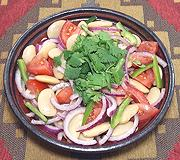

|
Lima Bean SaladPeru - Ensalada de Pallares | ||||
| Serves: Effort: Sched: DoAhead: |
2 ** 15 min Yes |
This excellent salad is substantial enough to be a lunch salad for two, with a side of bread and beer, or a salad course for 4. Made larger, it's a great buffet salad that won't wilt. | |||
|
9-3/4 4 5 1 ------- 1-1/2 1/2 1/2 2/3 1/4 ------- |
oz oz oz --- T T T t t --- |
ButterBeans (1) Onion, red Tomatoes ripe (2) Chili, Green (3) -- Dressing Olive Oil ExtV Vinegar wine white Lime Juice Salt Pepper -- Garnish Cilantro |
Make Salad - (15 min)
|